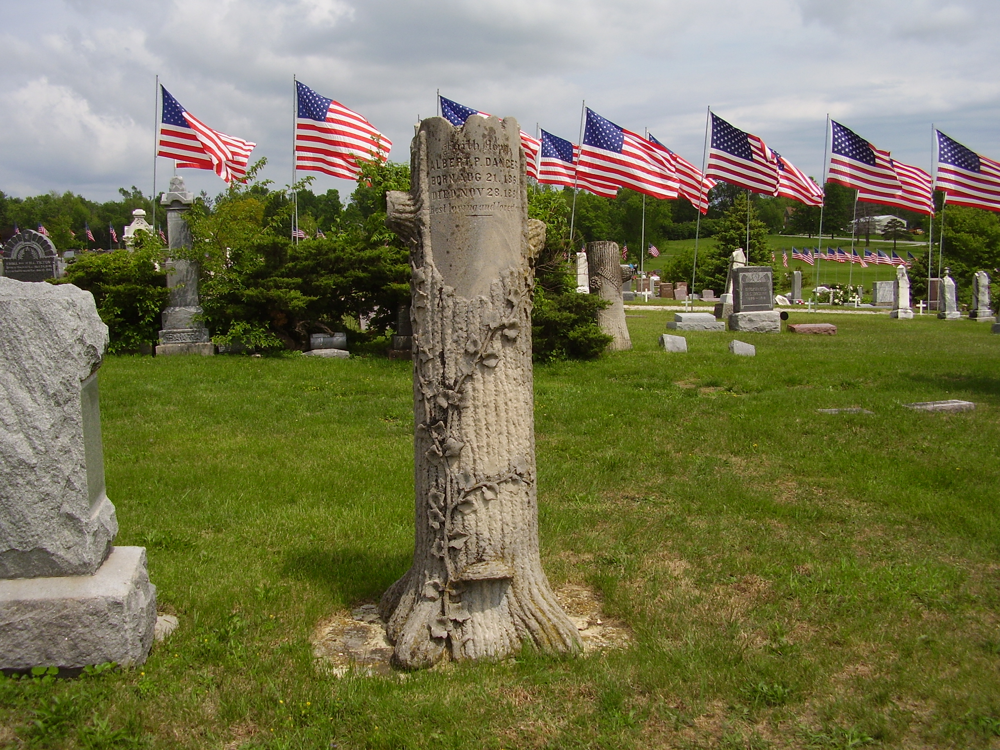

About Rose Hill Cemetery

First burial at Rose Hill, Albert Dancer, Nov. 1881
Lamoni was settled in 1879. Rose Hill Cemetery was established in 1885 when the City of Lamoni was incorporated as the city cemetery, managed by a board of trustees with oversight by the Lamoni congregation of the RLDS church, now called Community of Christ.
In 1906 Iowa law required towns to provide for the burial of their citizens. Lamoni assessed a cemetery tax which Rose Hill received in lieu of the city operating a cemetery. In the mid-1970s this tax ended, but the city continues to pay a subsidy for the valuable service it provides.
Rose Hill no longer owns heavy equipment or hires a caretaker for mowing, lot sales, records, and burials. Contractors using their own equipment do most physical tasks and competent volunteers do as much as they can.
- Rose Hill's Origin Story [Video]
- Rose Hill's Evolving Landscape [A Story in Maps]
- Pioneers and Patrons [Notable Early Burials]
- History of Lamoni [Beyond the Graves]